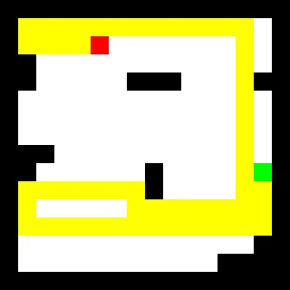
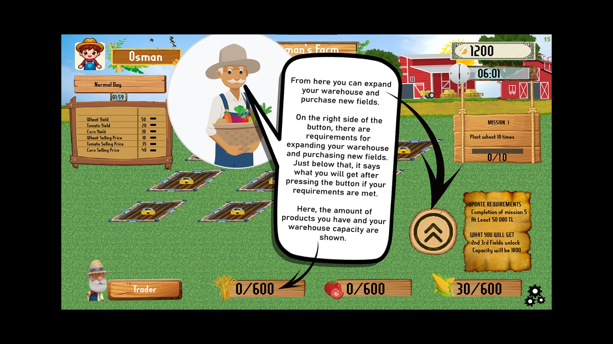

Path Blocker is a simple strategy puzzle game where the goal is to block the path of an AI-controlled player or object trying to reach a destination. The player places obstacles or walls on a grid-based map in an attempt to stop or delay the opponent's movement.
A console-based simulation game to manage a virtual farm, apply OOP concepts, and handle game events like crop growth and weather changes.
